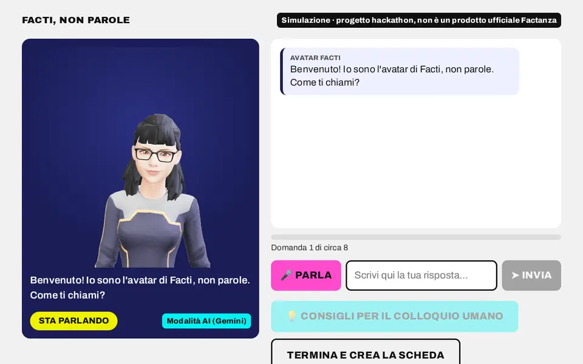
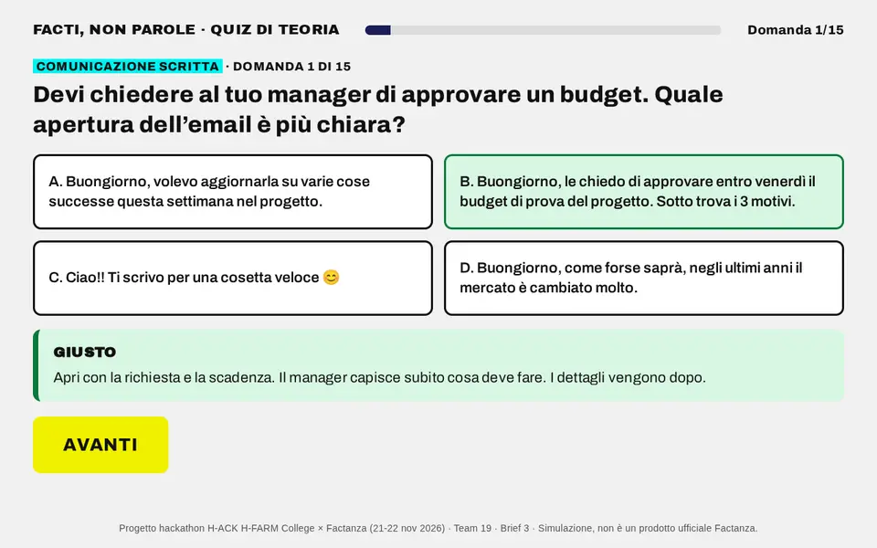
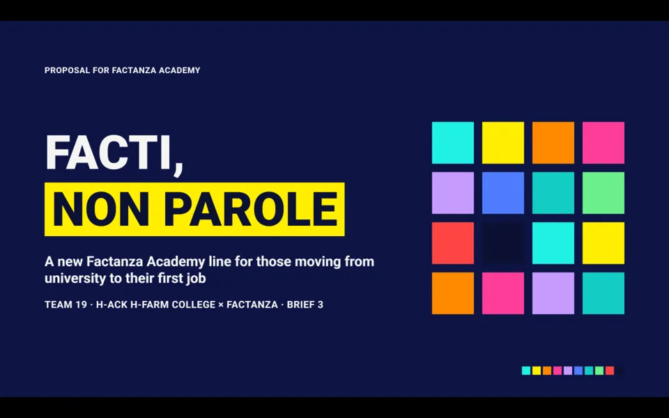

5 · Cosa abbiamo costruito
Cosa abbiamo

Avatar
Il colloquio d'ingresso
Un avatar AI su un Worker Cloudflare. Gemini fa le domande, ElevenLabs dà la voce. Nessun voto, alla fine una scheda PDF.
Apri →
Quiz
Il quiz di teoria
15 domande su casi reali. Dopo ogni risposta spiega perché.
Apri → Simulazione
SimulazioneLinkedIn
La campagna (simulazione)
Due post di lancio: studenti e aziende. Niente è stato pubblicato.
Apri →
Deck
La presentazione
Le 10 slide del pitch, in PDF.
Apri →